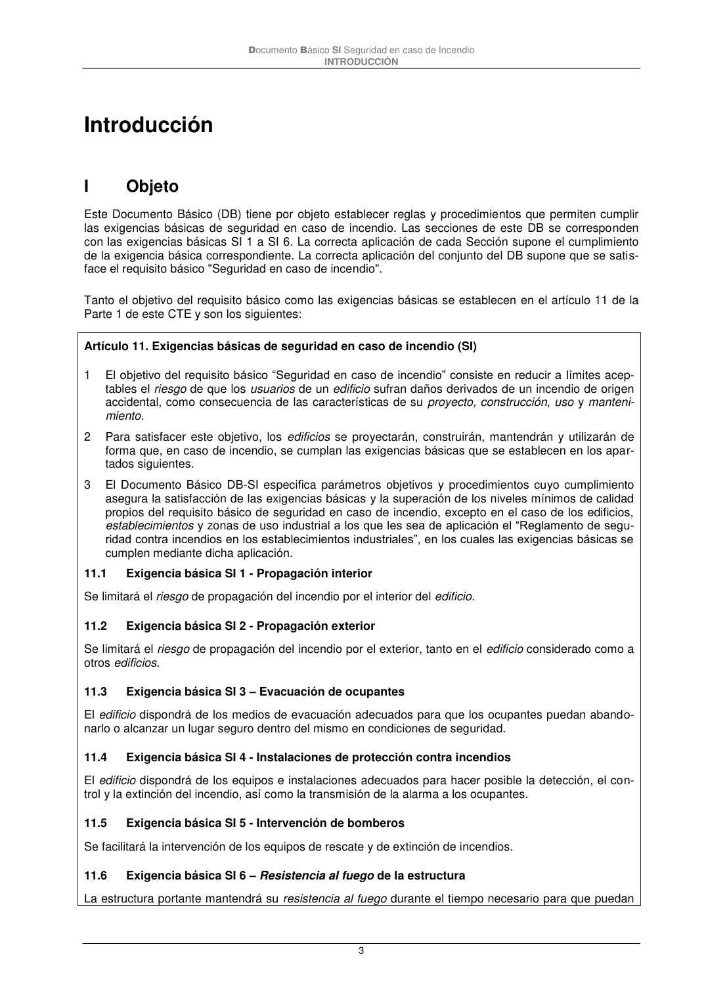

DB-SI · I Objeto · versión 2025-03-04 · capa oficial
Formatos: JSON compacto · Markdown · PDF fuente
Ámbito del documento · texto del ámbito · documento y tablas
ID técnico a0005 · PDF pág. 3 · jerarquía no validada por persona · contrastado con el literal de la página 3 (marcador PDF); no validado por persona · padre: raíz
Documento Básico SI Seguridad en caso de Incendio INTRODUCCIÓN 3

PDF fuente redistribuible: copia fiel enlazada en esta página (SHA256 verificado).